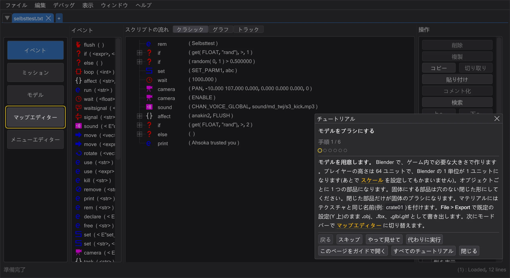
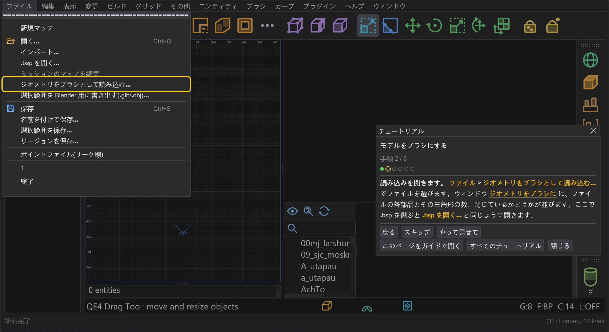
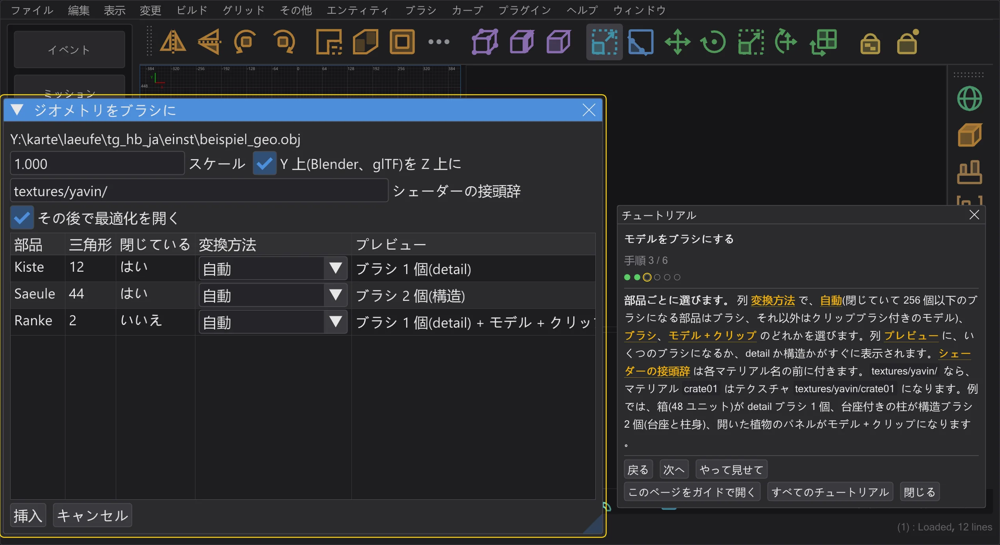
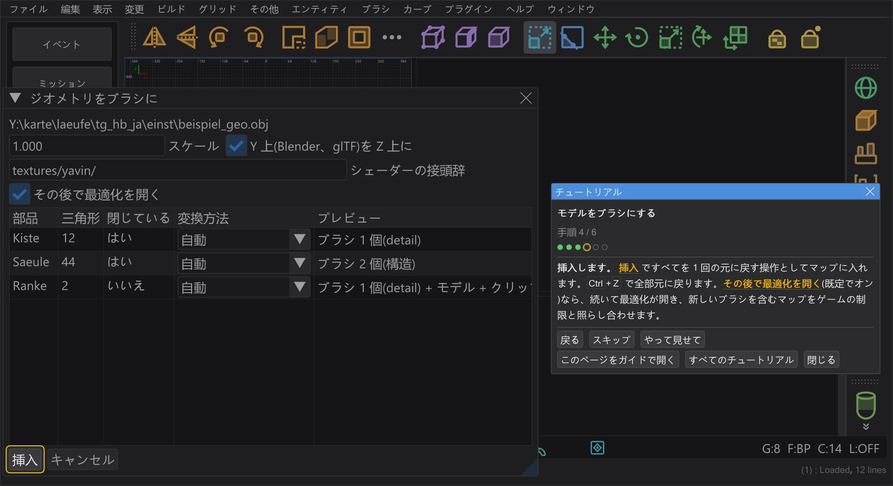
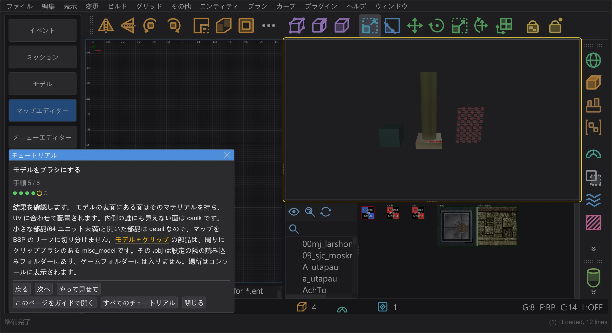
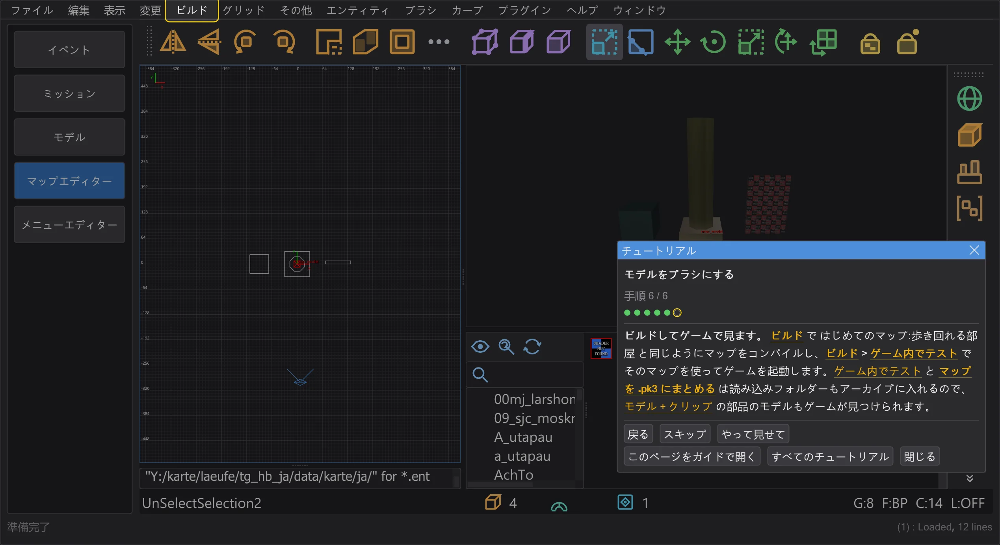

モデルをブラシにする
Blender からモデルを書き出し、マップエディターでその部品をブラシか、クリップブラシ付きのモデルにして、結果を確認します。
手順#
- 1
モデルを用意します。 Blender で、ゲーム内で必要な大きさで作ります。プレイヤーの高さは 64 ユニットで、Blender の 1 単位が 1 ユニットになります(あとで スケール を設定してもかまいません)。オブジェクトごとに 1 つの部品になります。固体にする部品は穴のない閉じた形にしてください。閉じた部品だけが固体のブラシになります。マテリアルにはテクスチャと同じ名前(例:
crate01)を付けます。File > Export で既定の設定(Y 上)のまま .obj、.fbx、.glb/.gltf として書き出します。次にモードバーで マップエディター に切り替えます。
プログラムでの手順 1: チュートリアルが次の操作場所を強調表示します。 - 2
読み込みを開きます。 ファイル > ジオメトリをブラシとして読み込む でファイルを選びます。ウィンドウ ジオメトリをブラシに に、ファイルの各部品とその三角形の数、閉じているかどうかが並びます。ここで .bsp を選ぶと .bsp を開く と同じように開きます。

プログラムでの手順 2: チュートリアルが次の操作場所を強調表示します。 - 3
部品ごとに選びます。 列 変換方法 で、自動(閉じていて 256 個以下のブラシになる部品はブラシ、それ以外はクリップブラシ付きのモデル)、ブラシ、モデル + クリップ のどれかを選びます。列 プレビュー に、いくつのブラシになるか、detail か構造かがすぐに表示されます。シェーダーの接頭辞 は各マテリアル名の前に付きます。
textures/yavin/なら、マテリアルcrate01はテクスチャtextures/yavin/crate01になります。例では、箱(48 ユニット)が detail ブラシ 1 個、台座付きの柱が構造ブラシ 2 個(台座と柱身)、開いた植物のパネルがモデル + クリップになります。
プログラムでの手順 3: チュートリアルが次の操作場所を強調表示します。 - 4
挿入します。 挿入 ですべてを 1 回の元に戻す操作としてマップに入れます。Ctrl+Z で全部元に戻ります。その後で最適化を開く(既定でオン)なら、続いて最適化が開き、新しいブラシを含むマップをゲームの制限と照らし合わせます。

プログラムでの手順 4: チュートリアルが次の操作場所を強調表示します。 - 5
結果を確認します。 モデルの表面にある面はそのマテリアルを持ち、UV に合わせて配置されます。内側の誰にも見えない面は caulk です。小さな部品(64 ユニット未満)と開いた部品は detail なので、マップを BSP のリーフに切り分けません。モデル + クリップ の部品は、周りにクリップブラシのある misc_model です。その .obj は設定の隣の読み込みフォルダーにあり、ゲームフォルダーには入りません。場所はコンソールに表示されます。

プログラムでの手順 5: チュートリアルが次の操作場所を強調表示します。 - 6
ビルドしてゲームで見ます。 ビルド で はじめてのマップ:歩き回れる部屋 と同じようにマップをコンパイルし、ビルド > ゲーム内でテスト でそのマップを使ってゲームを起動します。ゲーム内でテスト と マップを .pk3 にまとめる は読み込みフォルダーもアーカイブに入れるので、モデル + クリップ の部品のモデルもゲームが見つけられます。

プログラムでの手順 6: チュートリアルが次の操作場所を強調表示します。


知っておくと便利#
- コンパイル済みのマップ(.bsp) は ファイル > .bsp を開く で開きます。認識できたモデルはブラシではなく misc_model として戻ります。認識できなかったモデル面をブラシとして残す は、認識できなかったモデルの面を薄いブラシとしてレイヤー 認識できなかったモデル面 に残します。ジオメトリから misc_model を取り戻す を参照してください。
- ゲームのモデル(.md3、.glm) はブラシとして読み込めません。読み込めるのは .obj、.fbx、.glb、.gltf です。たとえば ⟦アセットブラウザー⟧ から、misc_model としてマップに置いてください。
- ブラシなしでモデルだけを使うには、ファイルをマップエディターにドラッグします(モデルをマップにドラッグする)。Blender に戻すには ファイル > 選択範囲を Blender 用に書き出す(.glb/.obj)(Blender へ書き出して戻す)。